Training window
- Plays
- –
- Games
- –
- Dates
- –
- Class mix
- –
Loading measured metrics from results/metrics.json and results/examples/∗_metrics.json…
This page reads JSON files from results/. Serve the repository root, not just docs/, then reload:
uv run python -m http.server 8000 --bind 127.0.0.1
# Open http://127.0.0.1:8000/docs/ in your browser.Opening the file directly with file://, or serving only docs/, cannot read ../results/∗.json. No fallback numbers are shown, because none would be measured.
2026 experiment
These scikit-learn models classify six recorded play types: field goal, pass, punt, QB kneel, QB spike, or run. They use pre-snap game context and the preceding play in the same game. The experiment trains on earlier games and evaluates once on later games. This report reads the measured scores from results/∗.json and includes three reference examples.
Inputs. The models take 11 numeric features: field position, clock, down and distance, timeouts, score differential, previous-play yards and the clock-running proxy. They also take 5 categorical features: the home team, away team, posteam, defteam and previous play type.
Protocol. A single date cutoff at – divides the games: earlier games train the models and later games form the holdout. There is no model selection on the test set and no random row shuffling.
Disclosure. Jadon Calvert directed the 2026 code, tests, documentation, results, and this page with AI assistance. The project revisits his 2024 coursework with new code and measurements.
Measured on the chronological holdout
Four models are measured on one shared holdout of – plays from – games, dated –. Accuracy and macro F1 are computed by scikit-learn from the same predictions. Macro F1 weights all six play types equally, so rare plays count as much as passes and runs.
Default prediction model
–
holdout accuracy
–
macro F1
200 trees, max depth 18, min leaf 5. It was chosen as the default before it was evaluated, and it is not the best model under every metric. See the trade-off below.
–
holdout accuracy
–
macro F1
Multinomial linear model on scaled one-hot features. It leads the forest on macro F1 because it scores much better on the rare QB spike class.
–
holdout accuracy
–
macro F1
Predicts the most common play type in each bucket of down and yards to go, counted from training data. A rule-based reference, not a fitted model of the passing game.
–
holdout accuracy
–
macro F1
Predicts pass for every play. Its accuracy equals the share of passes in the holdout, so it says nothing about football, and its macro F1 shows the cost of collapsing to one class.
All scores come from one holdout and one seed, –. They measure one temporal split, and they are not benchmark claims about football prediction in general. Open the raw metrics JSON.
The random forest has the best accuracy of the four models, –, but a lower macro F1 than logistic regression, – against –. The difference comes from the rarest class. On the holdout the forest caught – of – QB spikes, with recall – and F1 –, and it flagged only two plays as spikes across the two holdout seasons. Both flags were correct, and the other 119 spikes went unflagged. Logistic regression caught – of – spikes, with recall – and F1 –, at the cost of more false spike flags.
Accuracy and macro F1 disagree on this holdout, and the disagreement is concentrated in the rarest class, so no single number describes the results. The page reports both metrics and does not claim that either model is best in every case.
QB spikes are rare in this holdout: – of – plays, or –. Counts come from each model's confusion matrix, and recall and F1 come from the same report.
| Model | Plays flagged as spike | Spikes caught | Recall | F1 |
|---|
The training manifest records the dataset cleaning and date split shown here.
All conflicting ID groups sat in one game dated 2011-12-04, where only the timeouts remaining disagreed. The whole game was removed with the explicit --exclude-ambiguous-games flag, so previous-play context stays coherent. The library default refuses to guess and rejects such sources instead.
The SHA-256 of the source file is –.
Preparation keeps only plays whose type is one of the six targets. Other raw play types are used only as previous-play context, so the train and holdout row counts above total fewer rows than the retained source. Features never use the current play's outcome, and previous-play context never crosses a game boundary.
Generated directly by the repository's evaluate command from the same predictions behind the tables. Figures are original matplotlib output, not screenshots or third-party images.
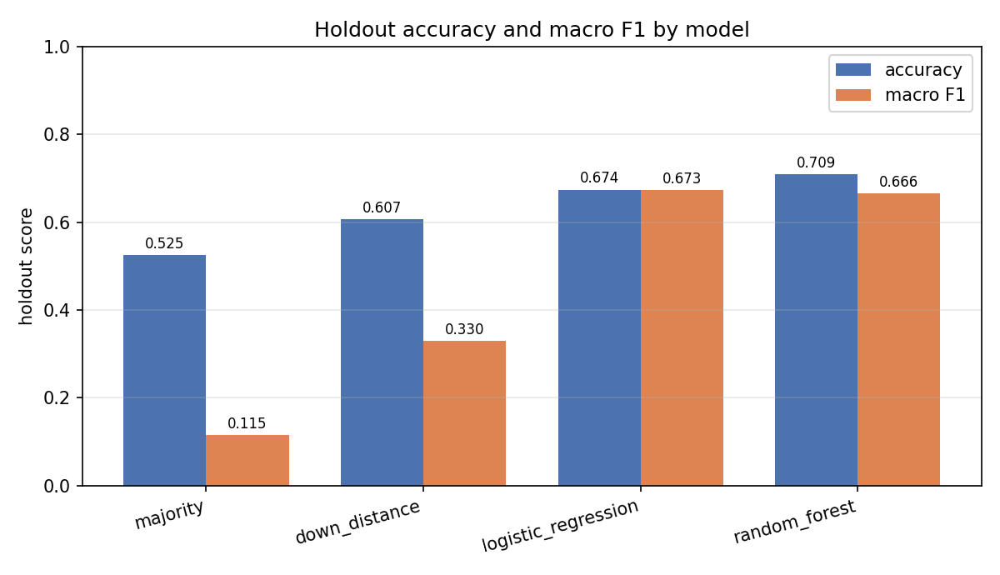
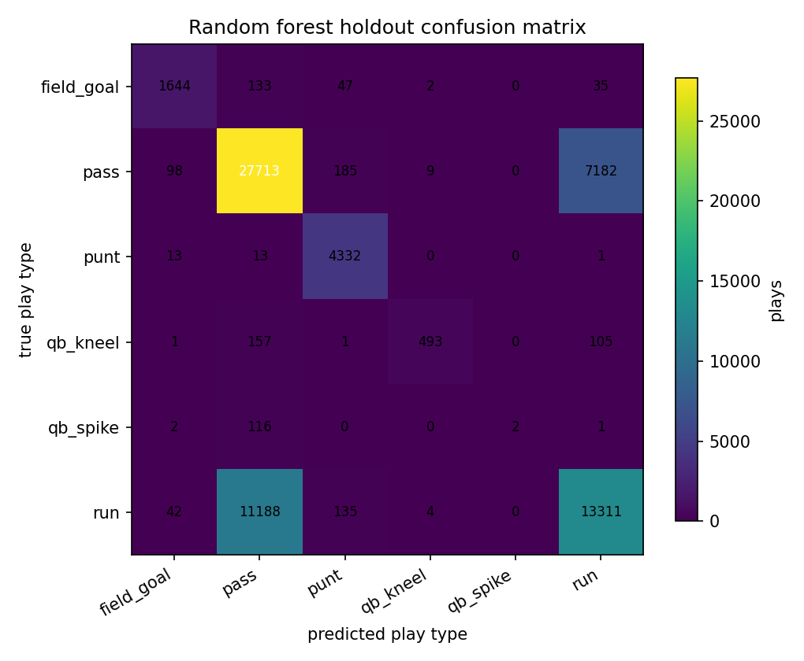
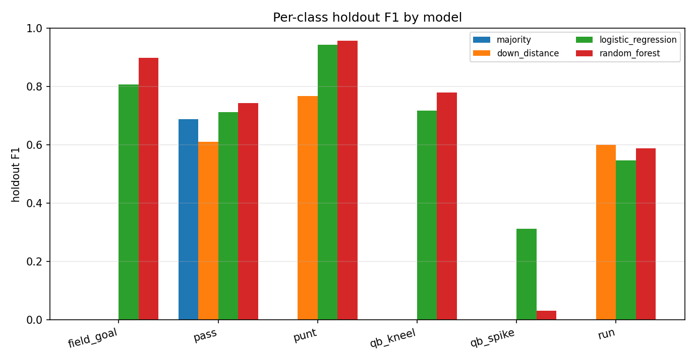
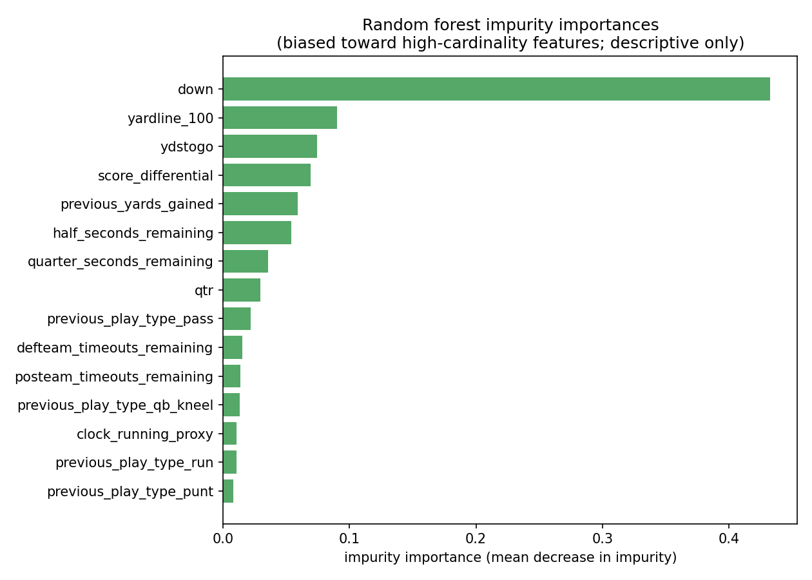
Choose a model to see its full classification report on the holdout. Support is the number of holdout plays of that type. Macro average weights each class equally, and weighted average weights by support. Values are read from results/metrics.json.
Loading…
| Play type | Precision | Recall | F1 | Support |
|---|---|---|---|---|
| Loading measured metrics… | ||||
The forest is preselected because it was the repository's default prediction model before evaluation, not because it wins every metric. Compare its QB spike row with the logistic regression row, because that row is what flips the macro F1 comparison. The raw JSON file is results/metrics.json.
Each example script writes metrics and figures for its dataset. These scores do not establish performance on other datasets. See examples/README.md for commands and limitations. The commands below run from the repository root and write to results/examples/.
The script generates a noisy linear relationship with – features and known coefficients. It compares least squares, scikit-learn's LinearRegression, and batch gradient descent on the same training rows. Gradient descent scales features using training statistics.
Data. A recorded seed generates the synthetic rows inside the script, and no external dataset is used. Limitation. One well-conditioned design compares solvers, not modeling strategies, and it says nothing about real regression data.
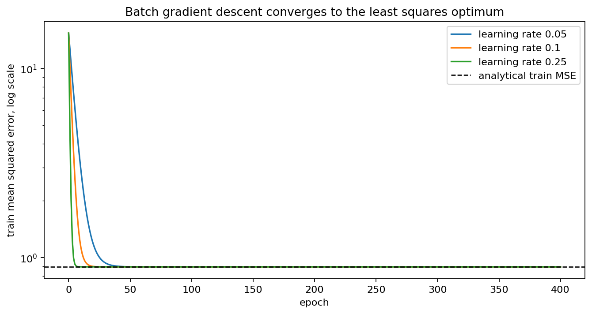
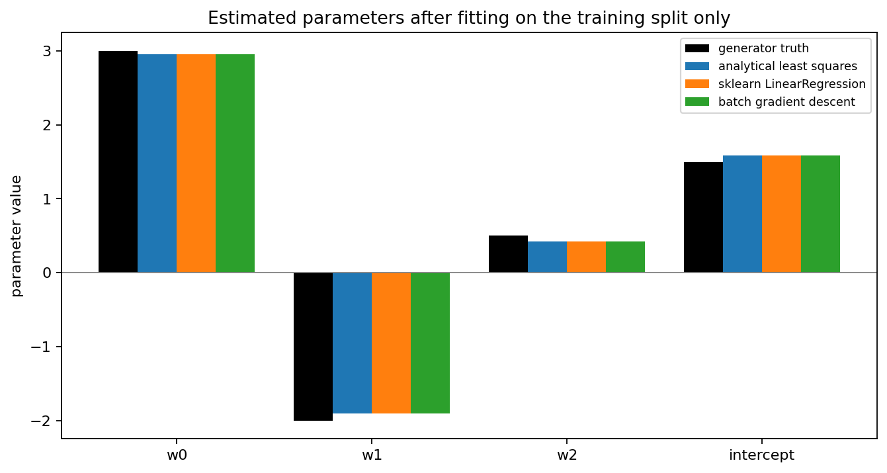
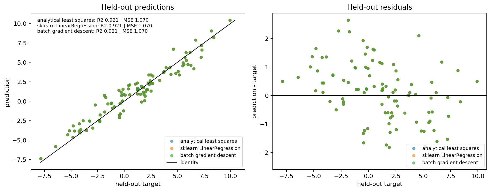
uv run python examples/linear_regression.py --output-dir results/examplesThe raw numbers are in linear_regression_metrics.json. The source is examples/linear_regression.py.
The first study compares KNN and Gaussian naive Bayes on scikit-learn's bundled breast cancer dataset, with – samples and – features. It preserves class proportions in the holdout and fits only on training rows. The second study applies TF-IDF and multinomial naive Bayes to fictional spam and ham messages written for this repository. The messages do not come from a real SMS dataset.
Data. The breast cancer dataset is real clinical data bundled with scikit-learn, so nothing is downloaded, and the messages are fictional text written for this repository. Limitations. The clinical numbers describe one stratified split, not the dataset as a whole. Gaussian naive Bayes is scale invariant, so its scaler only keeps the pipeline convention. The toy scores show TF-IDF and naive-Bayes mechanics on about thirty sentences; they are not a measure of spam-filter quality and must not be compared with SMS benchmarks.
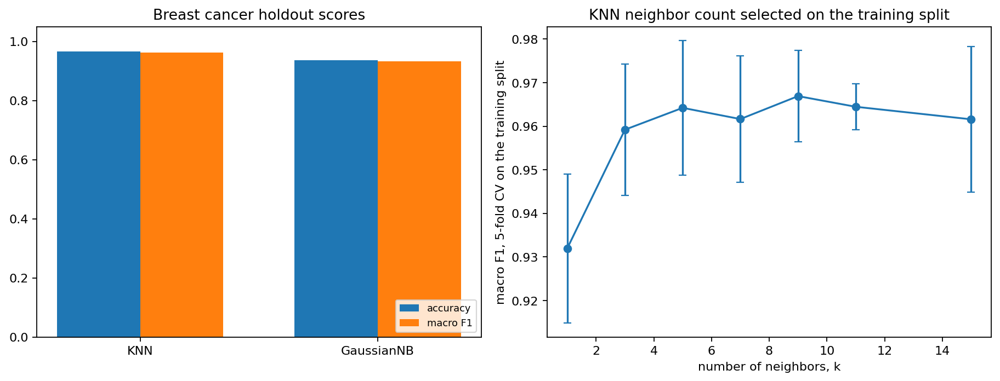
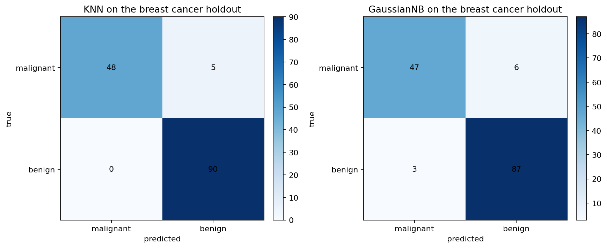
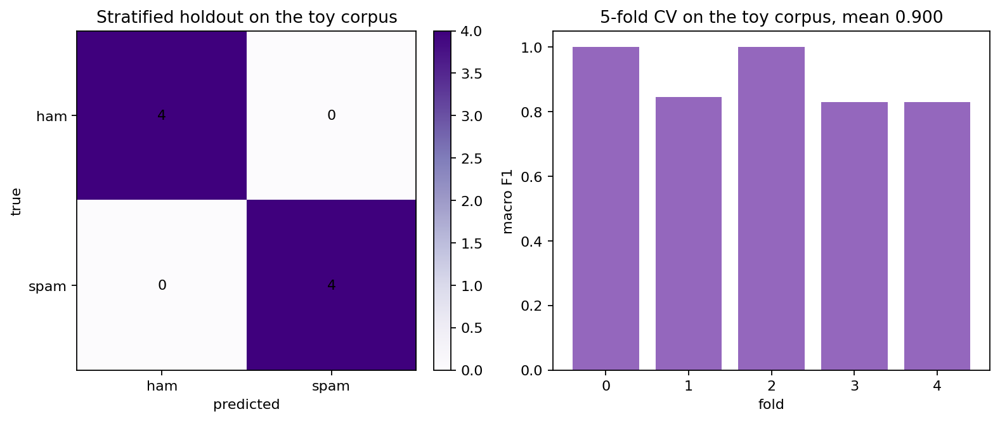
uv run python examples/classification.py --output-dir results/examplesThe raw numbers are in classification_metrics.json. The source is examples/classification.py.
The script fits K-means with several cluster counts on – seeded points around four known centers. It also generates an RGB image in NumPy and maps its – unique colors to – palette colors.
Data. The blobs and the raster are generated in the script from a recorded seed, and no photograph or third-party image is used. Limitations. The results describe these separated clusters and this exact scene, noise level and palette size. The compression ratio is arithmetic for an indexed palette, not a measured file size.
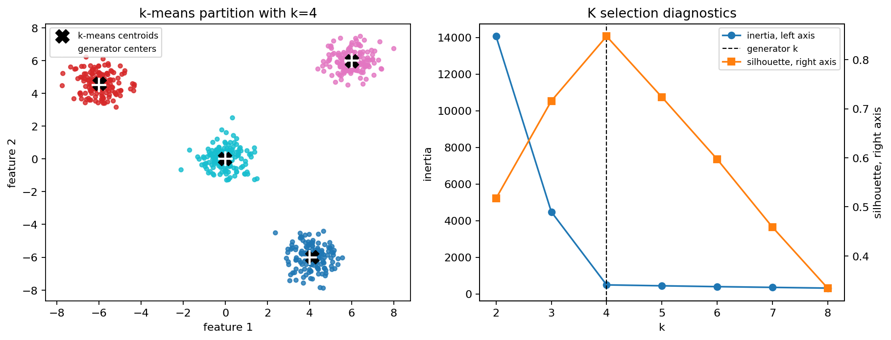
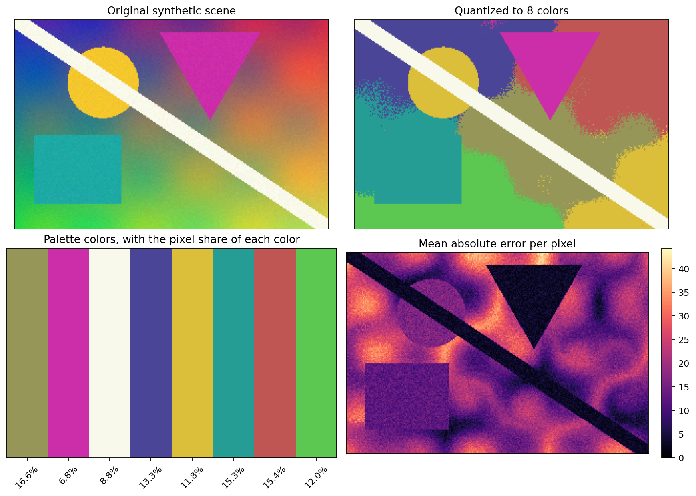
uv run python examples/clustering.py --output-dir results/examplesThe raw numbers are in clustering_metrics.json. The source is examples/clustering.py.
predict command takes local input that supplies every feature value.The author's 2024 coursework reported roughly 0.75 to 0.77 micro-averaged F1 under a different protocol, a random row-level split that leaks future games into training. Those figures are history, they are not reproduced in this repository, and they must not be compared with the numbers on this page. The measurements here come from one game-separated chronological holdout, evaluated once.
The NFL play-by-play source is published on Kaggle with the license field Unknown, and upstream NFL data rights are unresolved. This repository therefore ships no raw rows, no play descriptions, no player identifiers, and no model files. It ships only original code and aggregate derived results. Obtain the data yourself from the Kaggle dataset page. Details are in docs/data.md and docs/provenance.md.
The MIT license covers the original code, tests, documentation, examples, and figures. The repository excludes course materials, the 2024 notebooks, and the 2024 report. Jadon Calvert directed the new work, including this page, with AI assistance. The authorship statement does not claim that he wrote every line unaided.